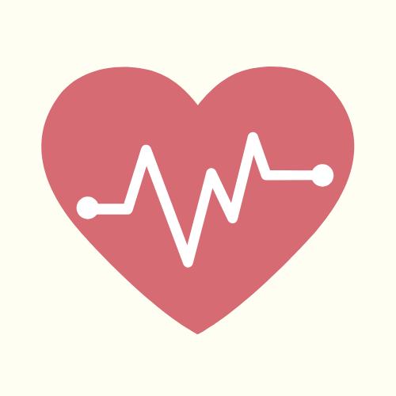
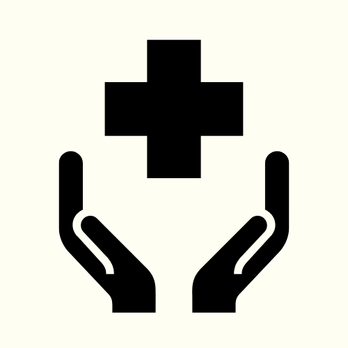
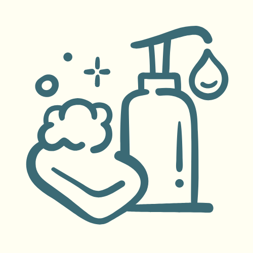
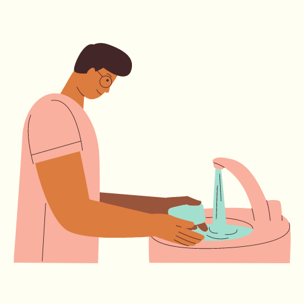

"Be Aware. Be Clean"
MADRASAH INSTITUTION




Project:
"Be Aware. Be Clean."
The Problem
Hygiene is essential especially now that we are in a pandemic.
Understanding proper hygiene can help us prevent catching covid
and other infectious diseases. Poor hygiene can lead to sickness
and that is why we should be aware of what to do when it comes to
taking care of ourselves. We aim to orient our partner community
on how to improve their hygiene and help them practice taking care of themselves.
The tendancy of being unhygienic is very common.
Unhygienic practices can occur everywhere, from
schools to even your own house and we may not even
notice we are doing these unhygienic practices. It is
important to know what these unhygienic practices are
and how we can prevent them.
Our Proposed Solution
Being able to show the importance of proper hygiene will be able to
benefit the children and their health. If this project is carried on,
more and more children in Madrasah will be able to understand what the
importance of proper hygiene is to their health and how it will affect
them in their studies that the Madrasah is providing them.
With what was explained, we as a group will be sharing our made online
materials to Madrasah. In order for all the infographic materials to be
effective, we will try to ask for help from the Madrasah in order to have
an easier reach to their benefactors.
With the problem identified, our way of addressing this is by
implementing a project where the children in Madrasah will be
taught proper hygiene practices with the use of online materials.
Examples of this is by providing them with video infographics that
will be easy for them to understand. We can also provide them with
posters and pictures in order to give more awareness on the improper
hygiene practices that the children do.
Why is the project important for the institution?
The project is important for the institution because the project helps the students of the school. Our project focuses on improving the hygiene of the students by teaching the students proper hygiene practices. It is important that the students learn proper hygiene because practicing proper hygiene can help in avoiding diseases caused by different bacterias. It also helps improve the lifestyle of the students of Madrasah. Because of this, I can say that the project is important for the institution because the project helps the students of the school.
Why is the project important for the Ateneo students?
The project is important for the Ateneo students because it teaches them how to engage with other people outside the school. Ateneo students can learn from this experience and project by learning ways on how to help people in different ways and can learn by the project in general. In conclusion, this project can help Ateneo students by its experience and education of the project.
Our project aims to:
- To teach proper hygienic practices.
- To promote proper cleanliness within the children.
- To make new health practices for the children.
- To spread out the purpose of our advocacy to Madrasah.
Rationale
This project is important as it will change the childrens’ understanding of their hygiene practices. It will be able to teach them what is wrong and what is right when following their daily hygienic practices. The project will also teach these children on what the effects of proper hygiene can bring to them and their health. Given the opportunity to address this topic will ensure that the children of Madrasah will be in good health in relation to their hygiene practices.
Why is the project important for the public in general?
The project is important to the public because if the project is a success then the chance of other people outside of Madrasah getting sick will be lower than before. It will also benefit the people inside Madrasah because they will learn proper hygiene and can teach others about proper hygiene.